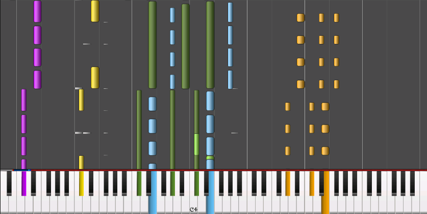

MIDI

MIDI is a technical standard that describes a communications protocol,
digital interface, and electrical connectors that connect a wide variety of electronic musical instruments,
computers, and related audio devices for playing, editing, and recording music.
The specification originates in the paper Universal Synthesizer Interface published
by Dave Smith and Chet Wood of Sequential Circuits at the 1981 Audio Engineering Society conference in New York City.
A single MIDI cable can carry up to sixteen channels of MIDI data, each of which can be routed to a separate device.